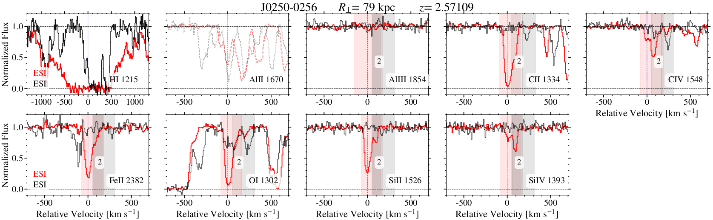

One of my main interest involves the study of diffuse gas surrounding galaxies (Circumgalactic Medium; CGM). My previous projects used absorption line systems from background quasars to understand the chemical evolution of dim galaxies and their halos throughout cosmic time. Specifically, I have worked extensively on studies involving Damped Lyman-alpha systems and their surroundings.
Mapping Extended Lyα Nebulae around Massive Quiescent Galaxies
with Michael Cooper (UCI), Caitlin Casey (UCSB), Kate Rubin (SDSU), and others

Leveraging the unique capabilities of Keck/KCWI, we propose a novel integral-field investigation into unexpected, cool Lyα emission in quiescent ultra-massive galaxies (UMGs; log(M*/M⊙)>11) at high-redshift (z~3). We have identified a subset of quiescent UMGs with strong Lyα emission, traditionally associated with star-forming galaxies, in the newly acquired COSMOS-Web catalog, raising questions about the origin of this anomalous emission and its role in quenching. Some of these UMGs are embedded within overdense regions, reminiscent of environments hosting megaparsec-scale extended Lyα nebulae seen around UMGs at z~2. Detailed Lyα mapping will provide unprecedented insight into the quenching mechanisms, progenitor populations, and interactions of cool gas in halos of UMGs and their environments.
Circumgalatic Medium of Damped Lyman-α Systems

We use medium- and high-resolution spectroscopy of close pairs of quasars to analyze the circum- galactic medium (CGM) surrounding 32 damped Lyα absorption systems (DLAs). The primary quasar sightline in each pair probes an intervening DLA in the redshift range 1.6 < zabs < 3.5, such that the secondary sightline probes absorption from Lyα and a large suite of metal-line transitions (including O I, C II, C IV, Si II, and Si IV) in the DLA’s CGM at transverse distances 24 kpc < R < 284 kpc. We can then use these to compare the gas metallicities and kinematics of the CGM to that of the host DLA.
Sizes of Damped Lyman-α Systems at z ~ 2.5
Damped Lyα absorption systems (DLAs) are the dominant resevoir of neutral gas at z < 5. As they are typically detected using line of sight observations, there is little known about the extent of this gas. Using observational data along with simulations, we seek to estimate the general sizes of DLAs. This work is in preparation, to be submitted early 2025 (Urbano Stawinski et al. in prep).